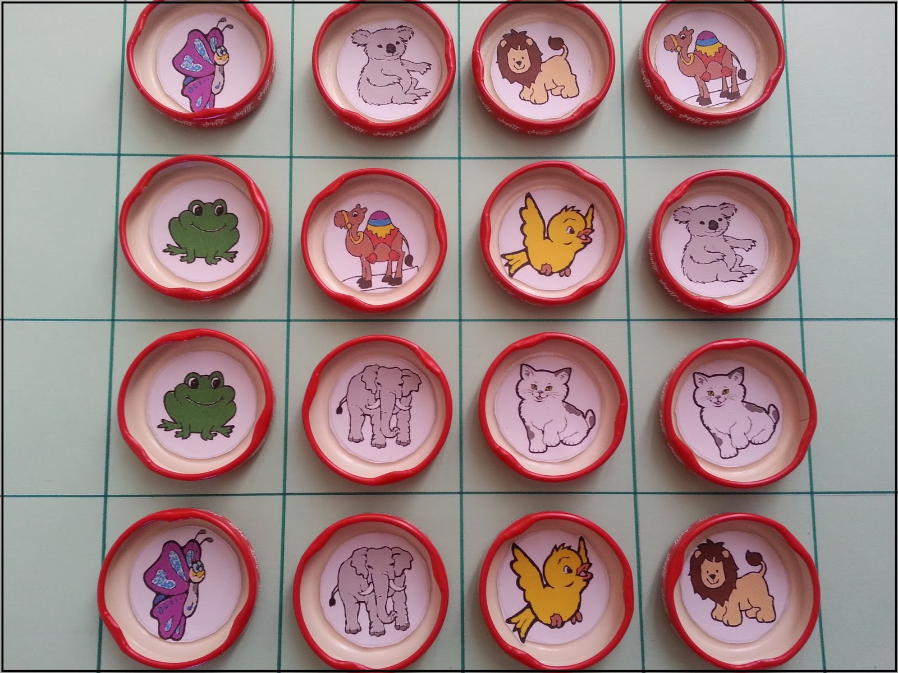
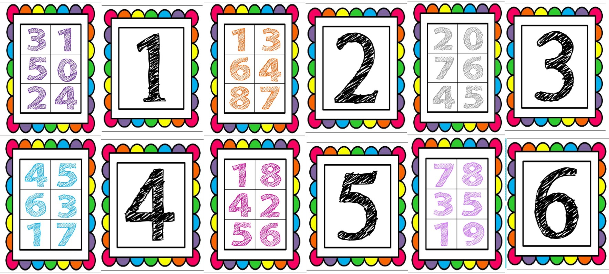
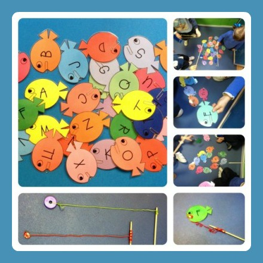

Hace algunos años, la introducción de los niños en el mundo de la lectura se dejaba en manos de la escuela, sin embargo, en los últimos tiempos, esta tendencia ha ido cambiando, gracias, principalmente, a los programas de animación a la lectura que han fomentado que tanto padres como madres se hayan involucrado en el interés por la lectura de sus hijos.

Así pues, es fundamental estimular desde bien pequeños a los niños en el hábito de la lectura, ya que les resultará muy beneficioso en su desarrollo futuro. En este caso, no es necesario esperar a que los niños sepan leer o escribir, ya que en la actualidad, existen muchos métodos de introducción a la lectura, sin necesidad de que el pequeño sepa leer o comprenda bien el texto.
Durante los primeros años de vida, un niño absorbe una gran cantidad de información que le ayuda a adaptarse a su entorno, y por lo tanto, la lectura le servirá para mejorar el desarrollo de sus habilidades.
Con la lectura de un libro podremos despertar su curiosidad, ampliar sus conocimientos y estimular su imaginación. Además, aprenderá a identificar situaciones cercanas y familiares y comprenderá sentimientos propios de su crecimiento y maduración.
Cómo fomentar el hábito de la lectura
Veamos a continuación algunas pautas que nos ayudarán a introducir y promover el hábito de la lectura en el pequeño:
- Favorece el contacto con el libro desde el principio, tratando de que lo vea como algo natural, no como una obligación, por lo tanto, no es necesario esperar a que le obliguen a leer en la escuela.
- Crea un ambiente familiar propicio para el desarrollo de la lectura, disponiendo de un rincón donde pueda guardar sus libros, y leerlos durante, al menos, 15 minutos al día sin ningún tipo de distracción.
- Estimula sus sentidos a través del libro, proporcionándole libros que pueda tocar, ver, oír u oler, aunque en principio, no comprenda su significado.
- Léele en voz alta, ya que narrar un cuento le resultará divertido y motivador, no sólo por el propio libro, sino también, por escuchar la voz de uno de sus padres.
- Anímale a interactuar en el proceso de la lectura, es decir, intenta que comente lo que le ha parecido, qué habría cambiado, qué cosas son las que le gustan, etc…
- Regálale libros cada poco tiempo, de tal modo que acabe viendo el libro como un premio que ha conseguido ganar.
- Predica con el ejemplo, ya que a los niños les encanta imitar lo que ven, por lo tanto, si ven que en el entorno familiar existe pasión por la lectura, el pequeño también se interesará por leer.
- Llévale a la biblioteca para que observe un ambiente de lectura, permitiéndole que investigue y que busque algún libro que le pueda interesar.
Bolos
Se colocan botellas de plástico pintadas de diferentes colores cada una de estas tiene escrito una consonante o número, seguidamente los niños pasan uno a uno a derribar los bolos que se le indique utilizando una pelota dentro de una media velada.
Ejemplo: Al niño que pasa se le indica que derribe el bolo de color azul con el número 10. Y de esta manera iremos practicando colores y números
Memoria
Se muestra tapas de plástico recicladas las cuales contiene en su interior imágenes como el sol, hamburguesa, una carita feliz una luna entre otras. Luego se esconden las tapas de modo que no se vean las figuras, luego por equipos irán revelando las tapas, el equipo que primero encuentre las parejas gana.
Lotería Numérica
Mostramos a los niños cartones con varios números y una botella llena de pompones con los números del 1 al 50 al igual que en los cartones, se hace entrega de los cartones de lotería a cada niño y se empieza a sacar pompones al azar de la botella, mencionando el número que ha salido, los niños buscan en sus cartones el número que ha salido y lo tapan con una piedra de color así hasta que tapen todo el cartón y griten lotería.
Pesca de palabras
En una caja están las consonantes M, P, L, S y las vocales A, E, I, O, U los niños usando una caña de pescar, saca de la caja letras y seguidamente el niño dice la primera palabra que se le ocurra en el menor tiempo posible.
Juegos en línea
A continuación, mostraremos un listado de juegos en línea los cuales sirven para mejorar las habilidades de los niños en el ámbito del arte.